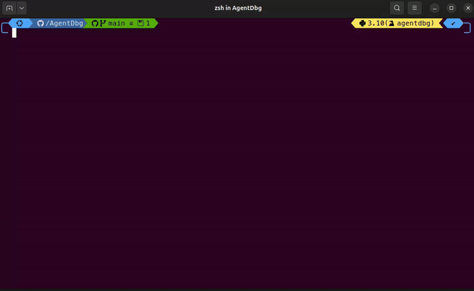

"Why did it call that tool?"
Inspect tool arguments, results, status, and errors without stitching logs together manually.

AgentDbg is the local-first debugger for AI agents. Add @trace, run your workflow, and inspect
a clean timeline of LLM calls, tool calls, errors, and loop warnings in minutes.
No cloud. No accounts. No telemetry. Everything stays on your machine.
If observability answers aggregate production questions, AgentDbg answers a sharper one while you build: what exactly happened in this run, and where did it go wrong?
Most teams still debug agents with print statements, scattered logs, and reruns that do not reproduce the same behavior. AgentDbg gives you one timeline with the full evidence chain.
Inspect tool arguments, results, status, and errors without stitching logs together manually.
Trace each run as a standalone artifact so regressions are easier to reason about and communicate.
Loop warnings and run guardrails expose runaway behavior before it turns into a budget surprise.
See every event in chronological order with expandable payloads and metadata. The viewer live-refreshes while your run is active.
| Event | Evidence you get |
|---|---|
LLM_CALL |
Model, prompt, response, usage |
TOOL_CALL |
Tool name, args, result, status |
ERROR |
Exception + stack trace |
LOOP_WARNING |
Repeated-pattern warning + evidence IDs |
Real run, local viewer, no cloud dependency.

Guardrails can abort runs when loops are detected or thresholds are exceeded. AgentDbg preserves the timeline up to the abort point so you can fix root cause immediately.
@trace(stop_on_loop=True, max_llm_calls=50, max_duration_s=120)
Available controls: stop_on_loop, max_llm_calls, max_tool_calls, max_events, max_duration_s.

Keep the core framework-agnostic. Add integrations only where they reduce instrumentation friction for your team.
Callback-based integration for LLM and tool lifecycle events.
TracingProcessor integration for generation spans, function calls, and handoffs.
Execution-hook adapter for runtime visibility with active run context.
Three commands. One decorator. Immediate evidence.
Install from PyPI.
pip install agentdbgAdd @trace to your run entrypoint.
from agentdbg import traceRun your app, then open the viewer.
agentdbg view7
Fixed event types for stable timelines
3
Optional integrations shipped
0
Cloud accounts required
No. AgentDbg is a development-time debugger for understanding single-run behavior, not a production monitoring dashboard.
No. Traces are stored locally by default. Redaction is enabled by default before writing payloads.
No. Core instrumentation is framework-agnostic. Integrations are optional adapters for existing stacks.
Yes. Guardrails can stop looping or threshold-breaching runs and preserve full evidence to the abort point.
Start local, stay fast, and ship with fewer surprises.